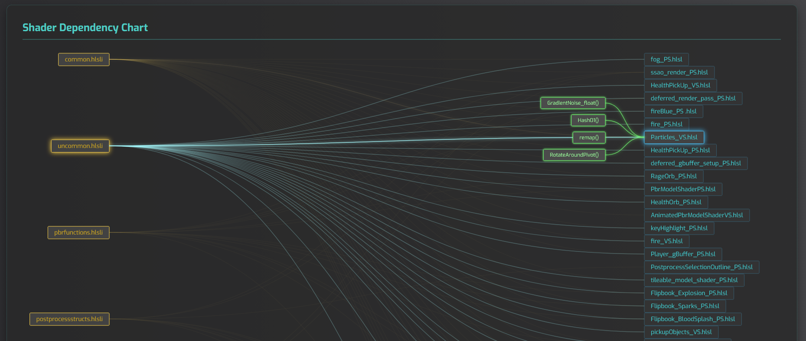
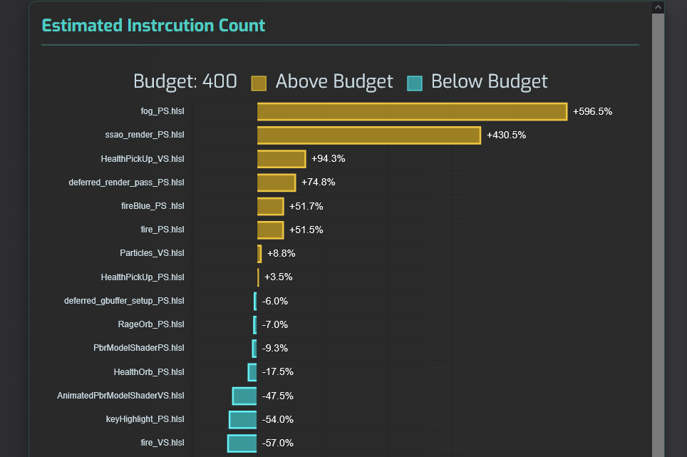
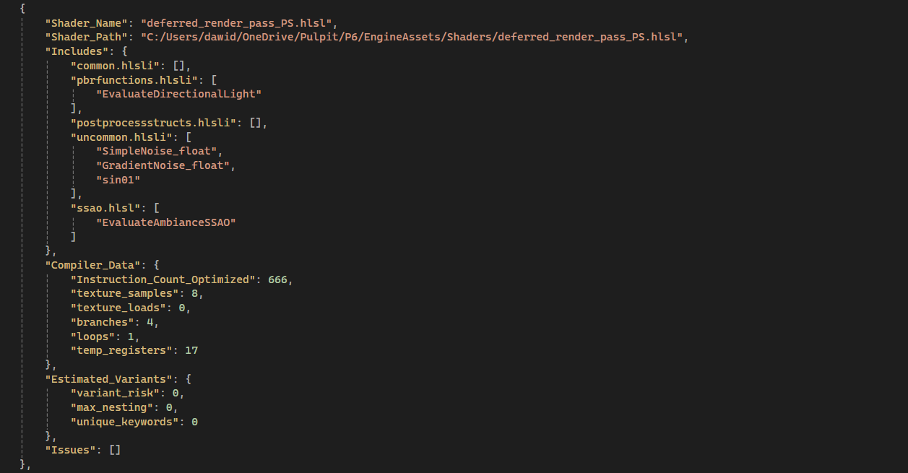
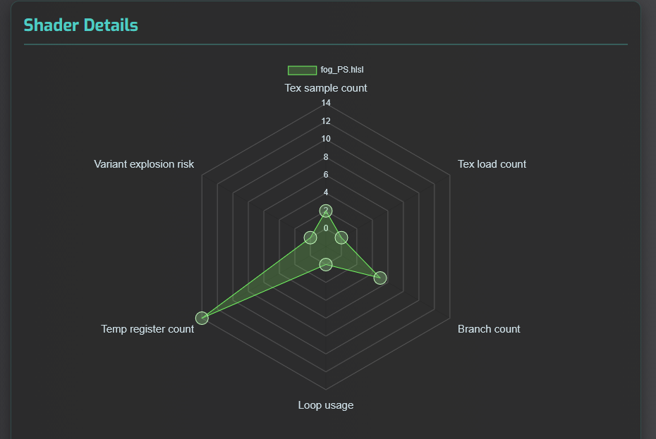
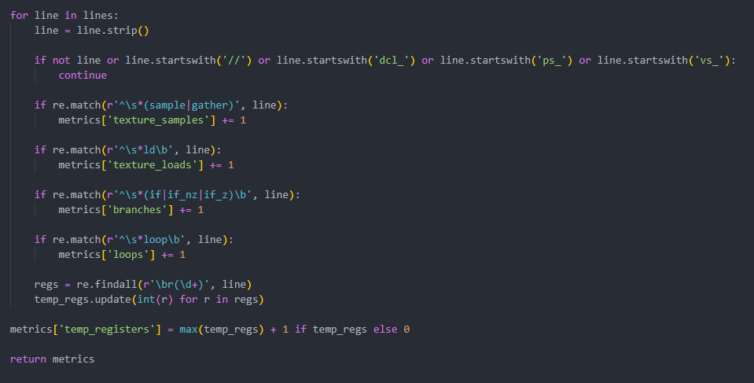
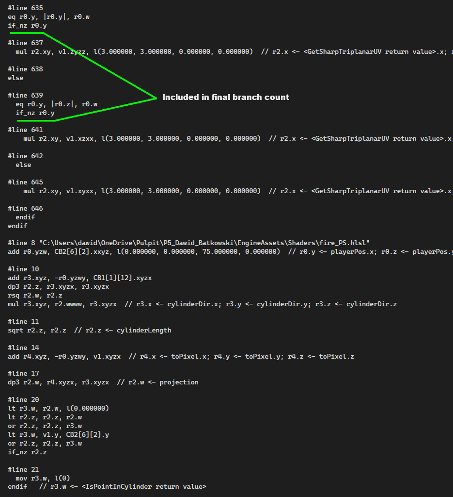
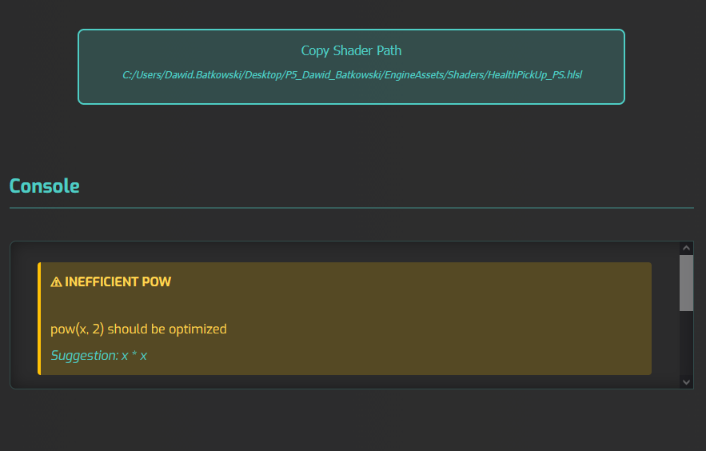
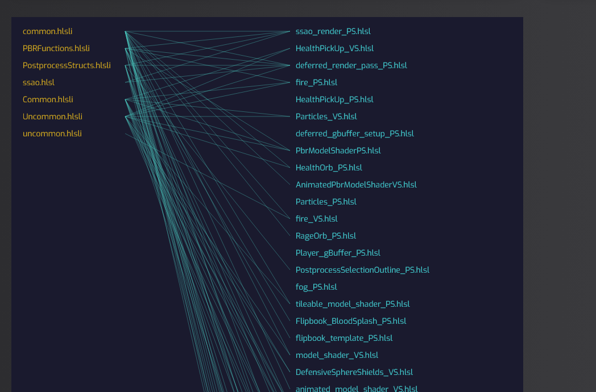
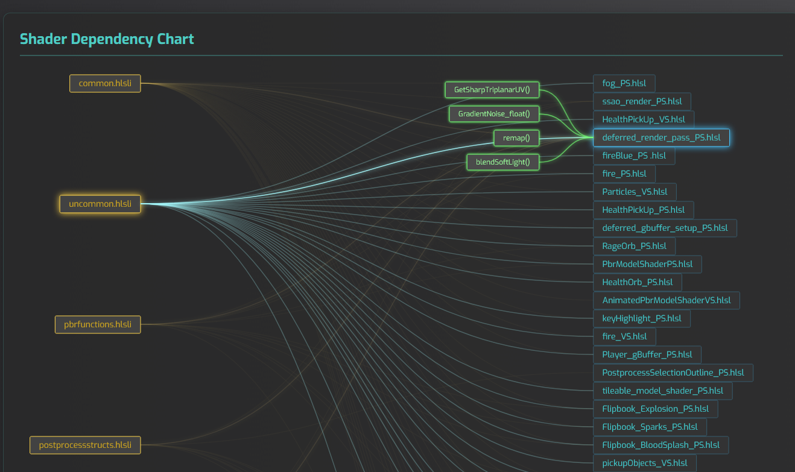

The goal of this project is to create a Python tool that allows users to scan project files, locate shaders,
parse them, and compile them using a shader compiler in order to generate structured data in the form of a JSON
file.
Additionally, a JavaScript-based visualizer loads the generated JSON file and presents the collected data
through user-friendly charts and graphs.
Initially, the tool was designed to focus on analyzing metrics such as ALU cost, texture sample/load counts, and
estimating variant explosion risk, with addition of detecting potential optimization opportunities.
However, the project direction was later adjusted.
Instead of focusing on optimization patterns, the focus was pivoted towards creating dependency graph that
illustrates which shaders use specific include files and which functions from those files are actually utilized.




Specifications:
- Languages: Python, JavaScript
- JS Libraries: D3.js, Chart.js
- Python packages: Pygments, tinkerer
The tool is designed to be quick and easy to use. After running the executable, the user selects a directory to
scan. The scope of the directory is flexible—it can be a specific folder containing shaders or an entire project
directory. The user then chooses where to save the generated JSON file.
Once generated, the JSON file can be opened directly or uploaded into the visualizer. The visualizer is a
JavaScript application that uses
Chart.js and
D3.js to display the collected data. It provides charts
as well as a dependency graph showing which shaders use specific include files and which functions are
referenced from those files.
The Python script executes the following steps:
1. Prompts the user to select the directory to scan, the output location, and the name of the generated
JSON file.
2. Searches the selected directory for files with the .hlsl extension and records their
paths and filenames.
3. Tokenizes the shader code using an HLSL lexer and analyzes it to detect inefficient pow()
usage that could be replaced with simpler multiplication.
4. Estimates variant explosion risk by analyzing preprocessor directives such as #if,
#define, and #endif. A scoring system is used based on their frequency and nesting
depth.
5. Compiles each shader using the FXC compiler with the highest optimization flag. The tool determines
whether the shader is a pixel or vertex shader based on filename suffixes (e.g., _PS or
_VS). If no suffix is found, it attempts compilation as a pixel shader first, and falls back to a
vertex shader if compilation fails.
6. The generated assembly output is stored temporarily and parsed to extract metrics such as instruction
count, branch count, texture operations, loop usage, and temporary register usage. The temporary file is then
deleted.
7. Finally, all collected data is structured into a predefined JSON format and written to disk.

Snippet of a function responsible for gathering data from assembly file

Snippet of assembly file generated by FXC, showcasing the type of data being parsed
Several aspects of the Python tool evolved significantly over time.
The initial approach relied solely on parsing shader source code to extract performance-related metrics.
This method proved to be fundamentally flawed, as accurately estimating instruction count, sampler usage,
and branching behavior is extremely difficult without accounting for compiler optimizations, loop
transformations and usage of include files.
A second approach involved using the DXC compiler to generate assembly output.
However, this solution was quickly abandoned because the generated assembly was complex and difficult to parse
reliably.
As a result, the tool transitioned to using the FXC compiler.
While FXC is limited to an older version of HLSL (5.1), it produces assembly output that is
significantly easier to
parse and includes pre-estimated instruction counts, making it more suitable for this type of analysis.
The JavaScript portion of the tool focuses on data visualization. Initially, Chart.js was used to implement bar
and radar charts due to its simplicity and ease of integration.
Once JSON file loading and parsing were implemented, creating basic charts required relatively little
development time, with most effort spent on configuration and styling.
However, Chart.js proved insufficient for building an interactive dependency graph.
For this purpose, D3.js was introduced, offering significantly more flexibility for data
manipulation, dynamic updates, and custom SVG-based visualizations.
The dependency graph became the most time-consuming part of the project, largely due to the steep learning curve
of D3.js and limited prior experience with JavaScript.
As a final addition to the visualization tool, a console panel and a
"Copy Shader Path" button were implemented.
The console is intended to display potential optimization suggestions for the selected shader.
However, due to the project's shift in focus toward dependency chart, the console currently provides only a very
limited set of suggestions.
The "Copy Shader Path" button is primarily a convenience feature, allowing users to quickly copy
the file path so it can be pasted into a file explorer or editor to open the shader directly.

Console and "Copy Shader Path" button

Dependency chart during work in progress

Dependency chart when finished